DJ initially began quilting in the late 1970s, and like most people, initially viewed it as a craft, not an art form. That attitude didn't last long, as she quickly realized that modern quilting had escaped the bonds of simple geometry, and taken on organic forms, varied textures, layering and more. She was quickly hooked, and it became a richly expressive outlet for her to work through her memories, fears, and her hopes and worries about the future.
| Thumbnail | Title | Year | Size | Notes |
|---|---|---|---|---|
| 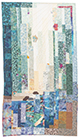 | Butterfly House | Circa 1997 | N/A | A deeply abstracted visual interpretation of her magical experience at a butterfly sanctuary (we believe it was at the San Diego Zoo). |
| Celtic Tree of Life | 2007 | 90" x 90" | From DJ: "There are 13 Celtic knots encircling the tree made of branches and roots. There are 13 months in the Celtic year. I incorporated the four elements into the quilting. Air is shown by the wind , Fire by the sun on the upper right, Earth is shown at the bottom of the quilt with layers of soil, rock. Plants are also quilted in this area. Water is quilted with the Sashiko stitch. The Celtic knots are not made by bias strips but individually cut to get the correct shading and pointy shapes. I was inspired when I saw a fallen oak tree showing its gnarly roots." | |
| 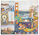 | City by the Bay | 2004 | 86" x 79" | From DJ: "Gum Lum, THE San Francisco Golden Dragon has a tail which becomes Lombard Street. A Fisherman's Wharf sea lion can waddle down a zen garden path into the Japanese Tea Garden. The running shoes throughout the quilt symbolize the crazy fun race held in the spring, the Bay to Breakers." |
| 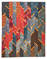 | DJ's Fire Quilt | 2018 | N/A | An artist's cathatrtic response to the Tubbs Fire of 2017 that destroyed thousands of homes in the city she'd called home for decades. |
| 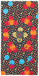 | Dots Alotta 'Lectrons | Circa 2014 | N/A | Red Challenge Quilt from the Pointless Sisters quilting group. "Blood is red. Hemoglobin makes blood red. Iron makes hemoglobin. It is a wonderful molecule, especially when one remembers that iron comes from an exploding star. 'We are star stuff,' said Carl Sagan." |
| 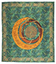 | Dragon's Walk | 2001 | 86" x 96" | A graduation gift for her eldest son. The center labyrinth is a copy of the Grace Cathedral of SF (and a copy of Chartes Cathedral labyrinth). The dragon was designed by Marc’s friend Ariel Erskine. Celtic knot work on the wings was DJ's own design. |
| 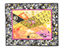 | Eye Qui(l)t | 2011 | 38" x 31" | A challenge quilt during a time when she was having issues with her eye health, and was worried that she might lose her vision completely. |
| 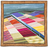 | Flying Over Tulip Fields | ??? | N/A | Inspired by an aerial photo of tulip fields in the Netherlands. |
| 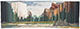 | Go Take a Hike (Yosemite) | ??? | N/A | |
| 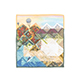 | Loss | Circa 2000 | 20" x 20" | Part of the WWII Quilts Project to honor the opening of the Rosie the Riveter WWII Home Front National Historical Park in Richmond, CA, it depicts the still little-known balloon bombings of the Pacific Northwest by the Japanese military. |
| 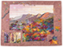 | Maples, Powers of 10 | 1993 | 73" x 55" | |
| 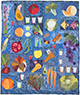 | Old Dawgs, New Tricks | 2003 | 48" x 58" | Another of the health series of quilts, expressing feeling about changing her diet and exercise routines after being diagnosed with diabetes. |
| 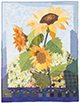 | Sunflowers | ??? | N/A |